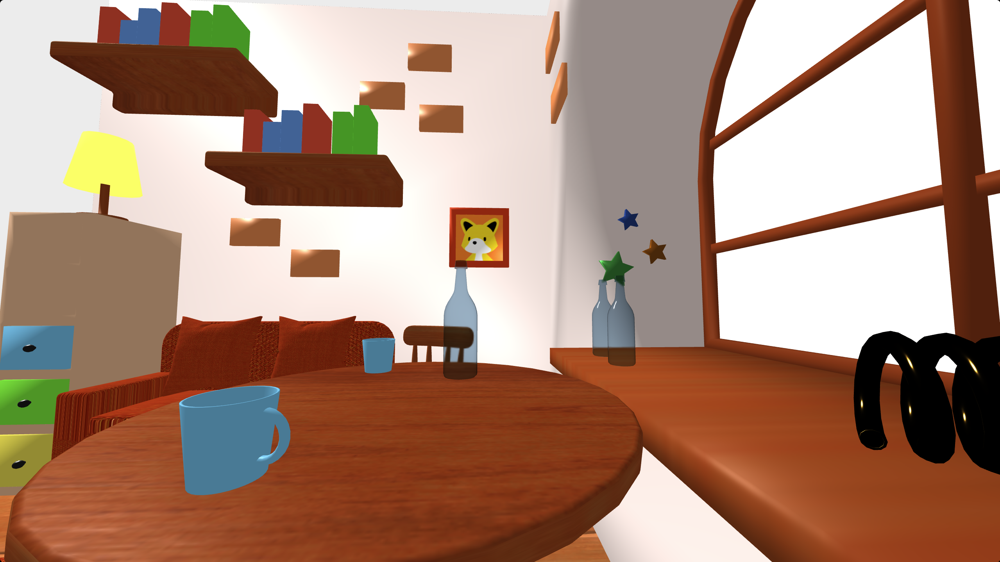
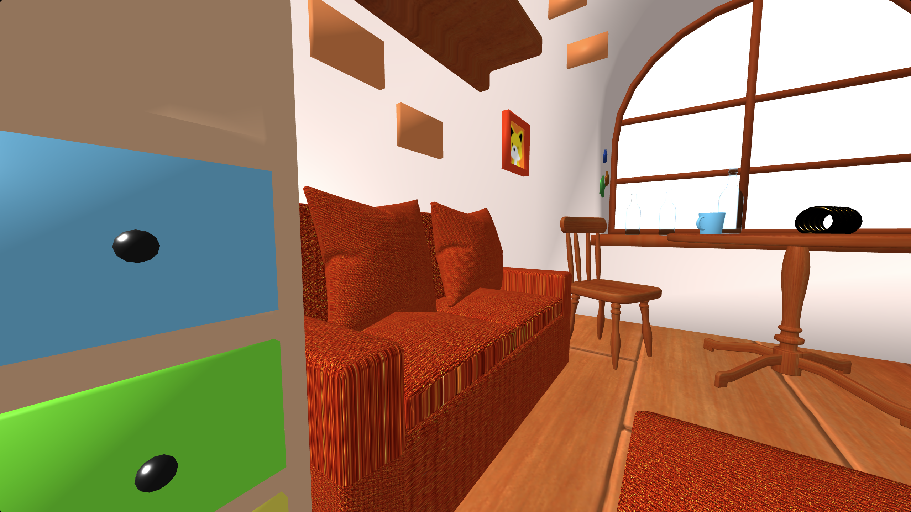

Blenderの基礎操作の理解を目的として制作した室内シーンです。
『はじめての3Dモデリング Blender 4 超入門 改訂新版』をもとにモデリングからマテリアル設定、ライティングまで一通りの制作工程を学習しました。
家具や小物などの基本的なオブジェクトを制作し、室内空間の構成や配置を意識しながら制作しています。


カメラ操作
・マウスで視点を自由に回転できます
・WASDキーで前後左右へ移動できます
・Spaceキーで上昇、Shiftキーで下降できます
※パソコンでの閲覧を想定しています※全画面表示を終了する場合はEscキーを押してください
※モデルの読み込みが完了するまではレンダリング画像が表示されます
制作期間：約1週間(参考書の内容を進めながら、Blenderの基本操作を理解することを目的に制作しました。)
使用ソフト：Blender4.2
参考書の内容をそのまま進めるだけではなく、各工程で使用したBlenderの機能をメモにまとめながら制作しました。
などを整理しながら制作することで、後から同じ作業を再現できるように意識して学習しました。
この制作を通して、Blenderでの基本的なモデリングフローを理解することができました。